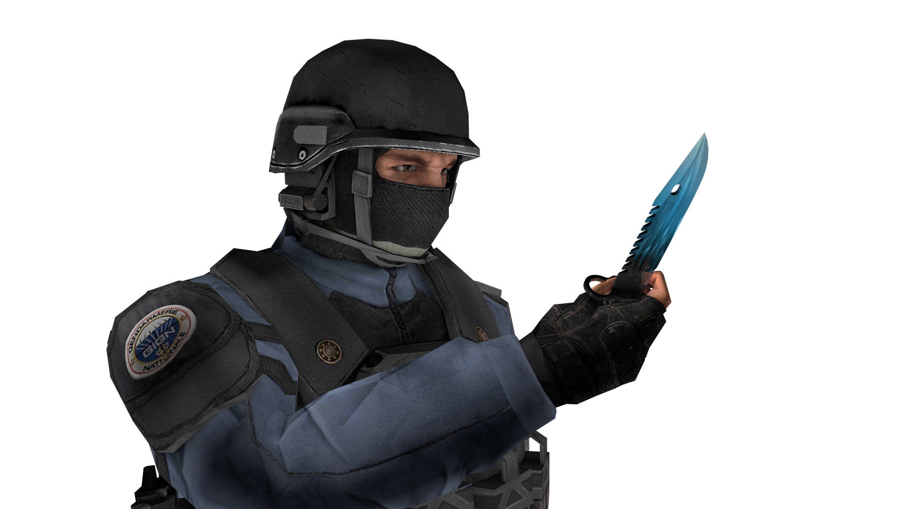

Standoff 2 представляет собой классический шутер от первого лица с различными режимами игры и арсеналом разного оружия. Каждое оружие обладает различным набором характеристик, ограничивающих тактические возможности игрока: пробиваемость брони, отдача, темп стрельбы, цена, награда за убийство, боезапас[5].
На начальных этапах игры доступны различные режимы игры, такие как закладка бомбы, командный бой, эскалация и другие. Когда игрок>достигнет пятнадцатого уровня, ему откроется режим «Союзники», матчи в котором проходят в формате 2х2, а при достижении двадцатого — соревновательный[6]
В отличие от большинства мобильных шутеров, в Standoff 2 отсутствует автострельба и помощь в наведении, но в то же время есть и гибкая настройка управления: возможность перемещать, изменять видимость и размеры большей части элементов интерфейса. За реальные деньги в игре продаются только декоративные предметы, не влияющие на игровой процесс[7].
`Критики неоднократно сравнивают игру Standoff 2 с Counter-Strike: Global Offensive и называют её мобильным клоном[2][3][6]. Сушант Рохан Сингх из PCQuest назвал игру самой лучшей из всех адаптаций CS:GO для мобильных устройств и идеальной игрой в жанре FPS, а также оценил, прежде всего, хорошую частоту кадров, приятный игровой процесс, скины и сильную защиту от читеров и хакеров. Сушант отметил, что, возможно, игра недостаточно оптимизирована, так как на некоторых телефонах наблюдаются задержки в работе приложения, но это явление характерно, по его мнению, для любой многопользовательской мобильной игры, или зависание связано с тем, что Standoff 2 не предназначена для работы на платформе MediaTek[2]. В третьем квартале 2021 года Standoff 2 вошёл в тройку самых доходных на российском рынке игр[8